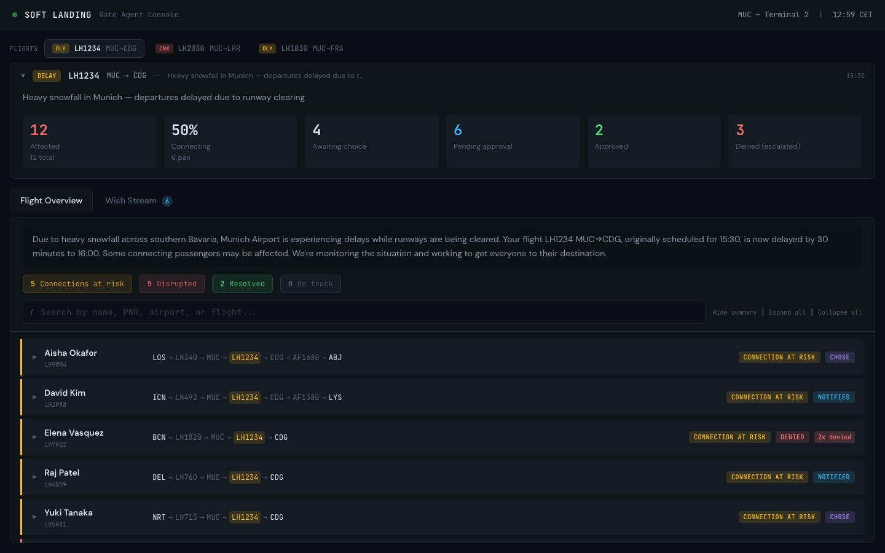
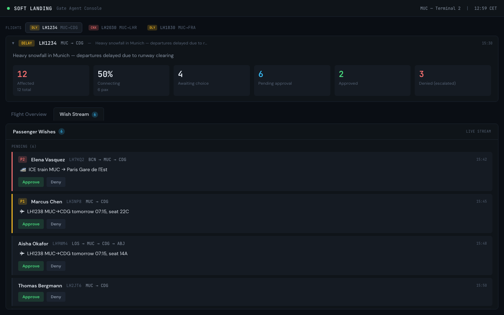
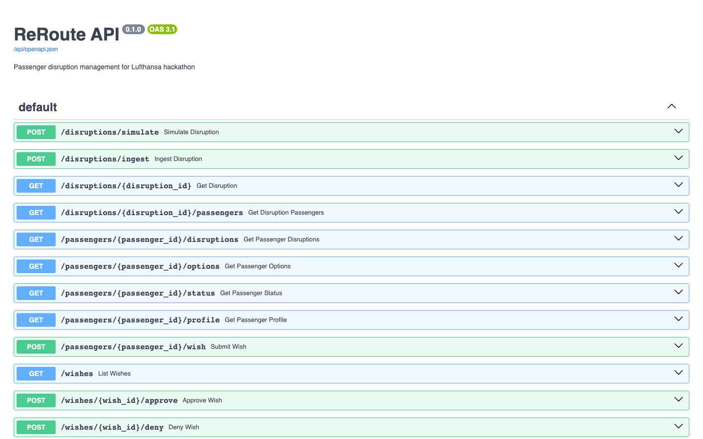

When flights break, passengers crowd the desk and agents drown in manual rebooking. Soft Landing gives the gate agent an operational command center that surfaces every affected passenger, their preferences, and the cascading impact of each decision — in real time.
The Problem
Airlines handle millions of disrupted passengers each year. The current process is sequential, manual, and blind to cascading impact.
The Solution
Passengers self-serve through a companion app. Their preferences stream directly into the gate agent's command center. The agent stays in control — human-in-the-loop for every decision.
Real-time operational command center. See all affected passengers, their wishes streaming in live, approve or deny with one click — and instantly see the cascading impact on everyone else.
Passengers receive a plain-language explanation of what happened and why. Then they choose from AI-generated options — rebook, hotel, train, alternative airport. Their choice is a wish, not a booking. The gate agent has final say.
Built & Running


How It Works
Flight cancellation, delay, or diversion triggers the system
AI builds personalized alternatives per passenger using live data
Ranked preferences submitted as wishes — not bookings
One-click approval with cascading impact visibility
Passenger gets confirmation and clear next steps instantly
Denied passengers get escalated priority — never sent to the back of the line
Technology
Python 3.14 + FastAPI — the brain that connects everything.
React + TypeScript — the primary product for gate agents.
Kotlin Multiplatform — Android, iOS, and Web from one codebase.

Live Demo
Everything is deployed and running. Open the gate agent dashboard to see the operational view, or open the passenger app to experience the passenger side.